1 嵌入还是引用
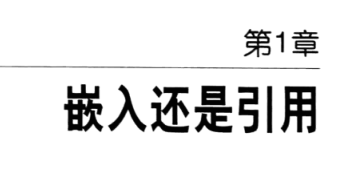
关系型数据模型和标准化
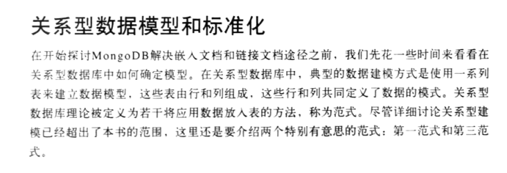
什么是范式
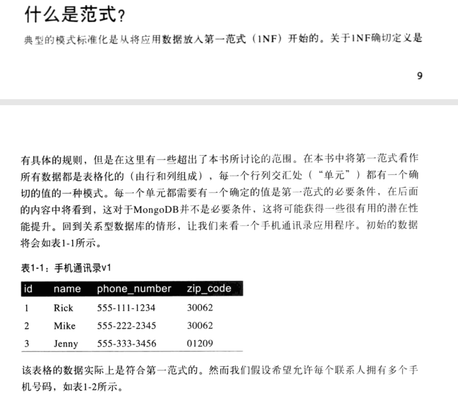
问题所在
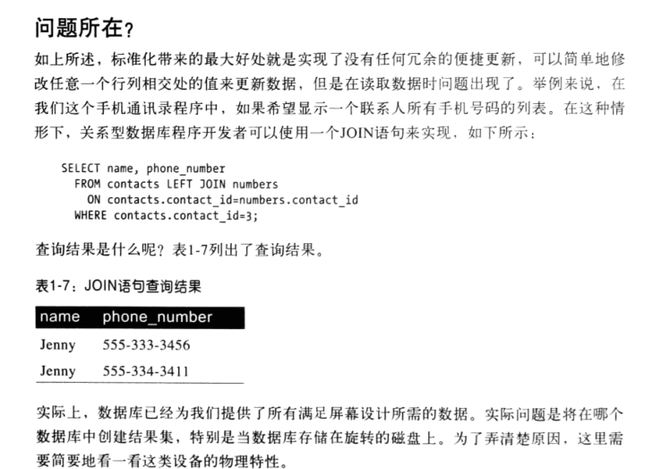
采用非标准化来提高性能
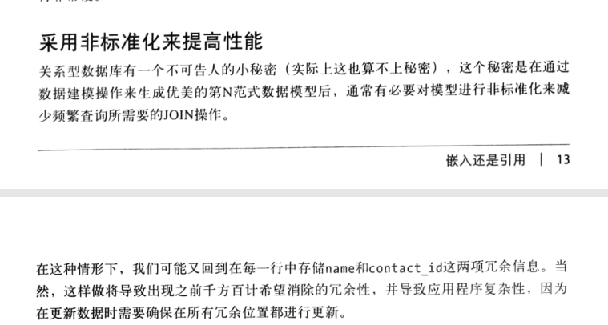
MongoDB 不论如何，谁需要标准化呢
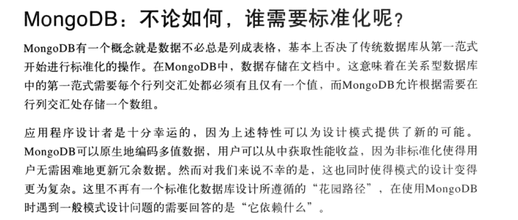
MongoDB文档格式
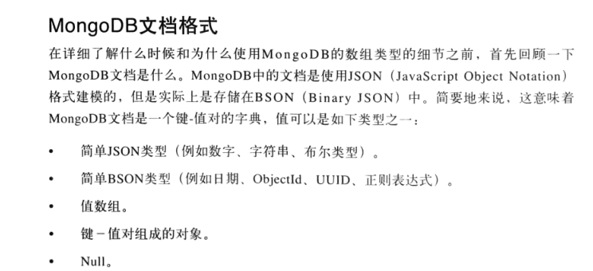
局部性嵌入
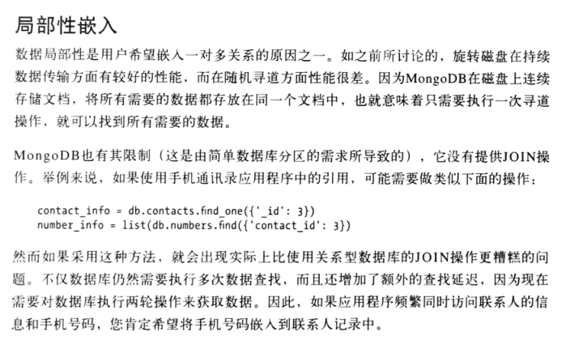
原子性和独立性嵌入
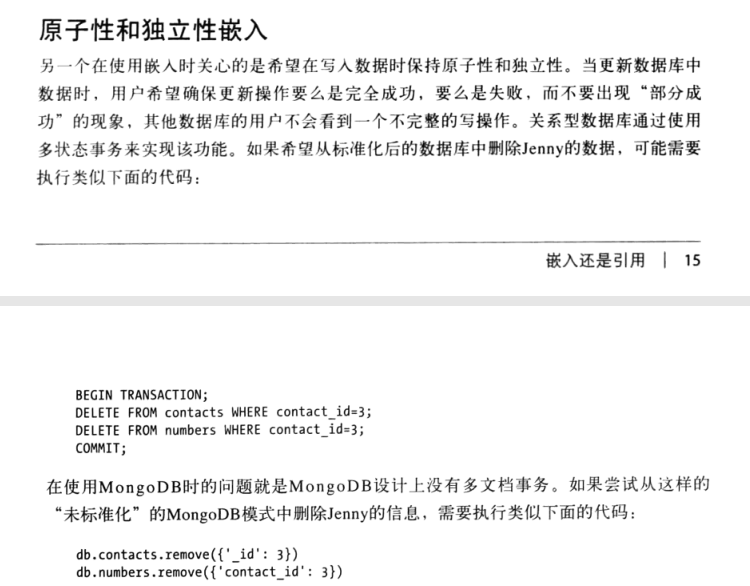
为了灵活性采用引用
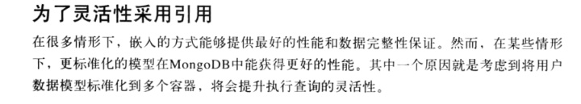
为了潜在的高引数关系使用引用
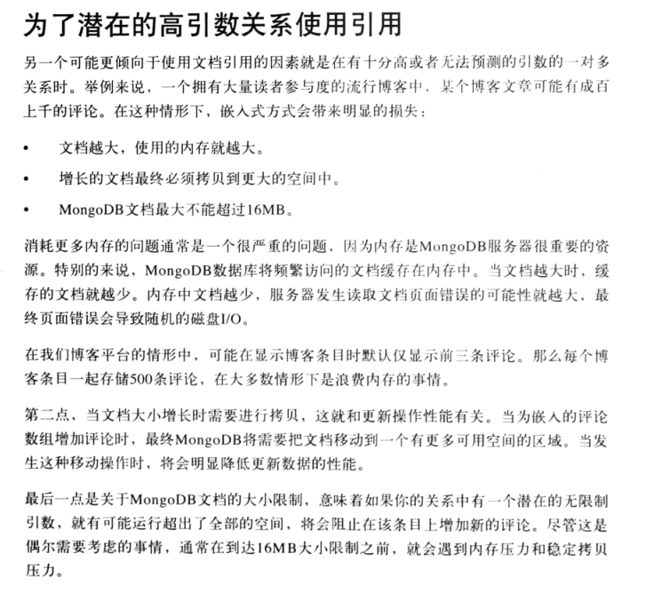
2 多态模式
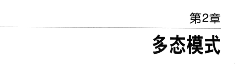
3 模仿事务行为
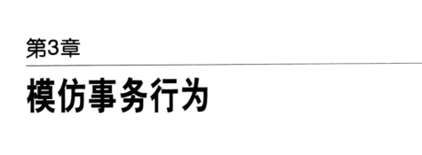
一致性的有关方法
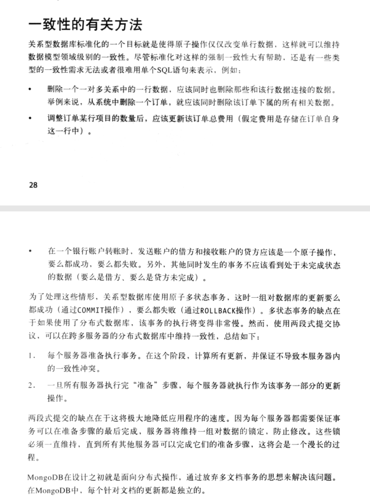
使用补偿来优化更新
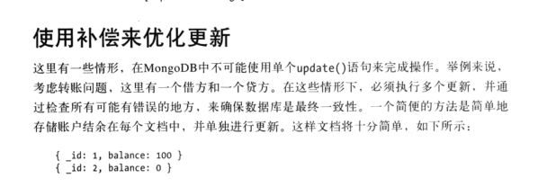
小结
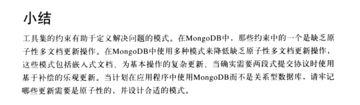
4 运营智能
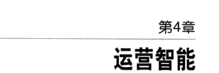
存储日志数据
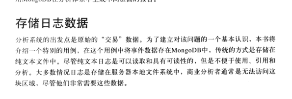
解决方案概述
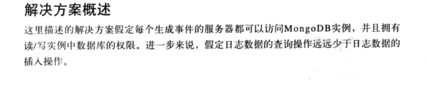
模式设计
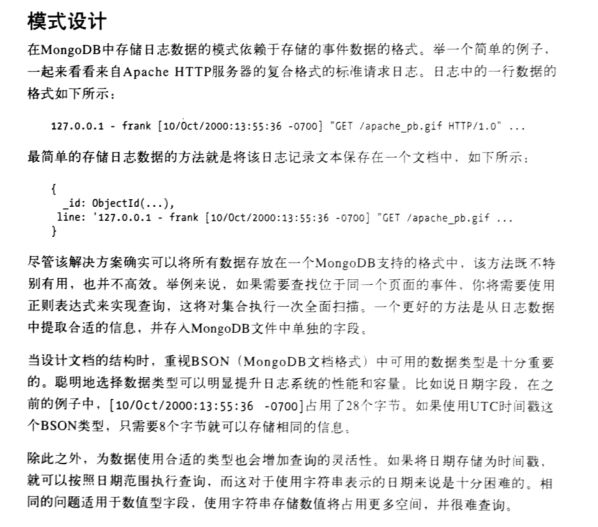
操作
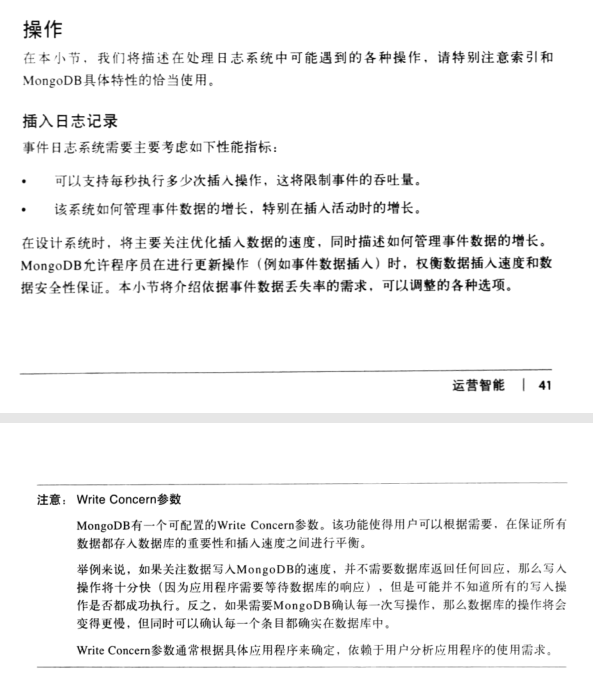
批量插入
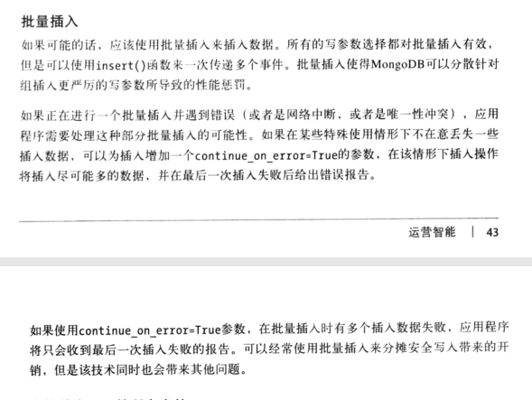
查找特定页面的所有事件
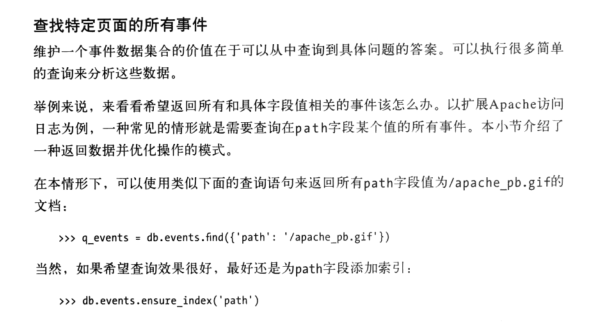
旁白 管理索引大小
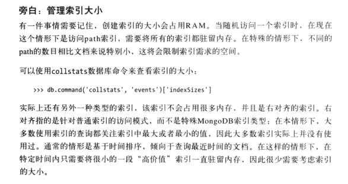
索引设计规则 ERQ
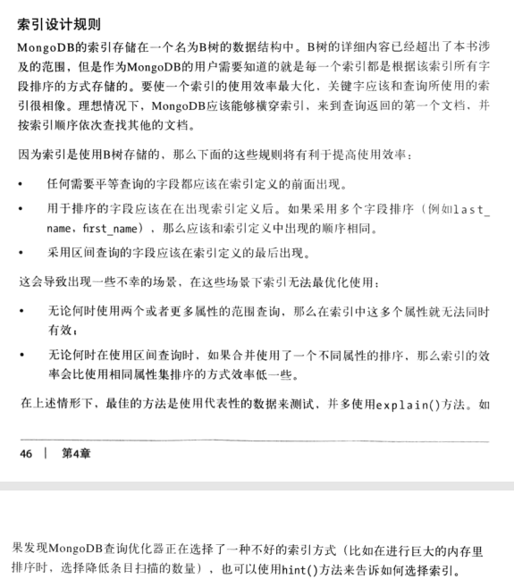
分片需要考虑事项
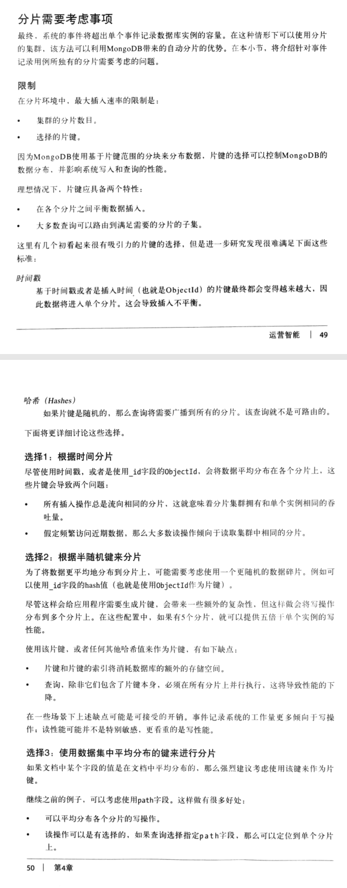
管理时间数据增长
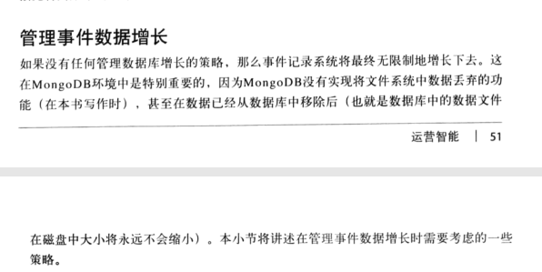
有上限的集合
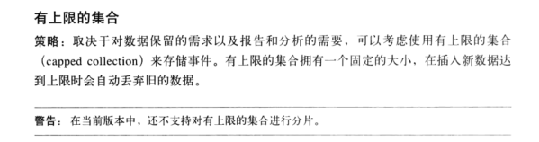
TTL集合
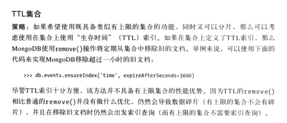
多集合 单数据库
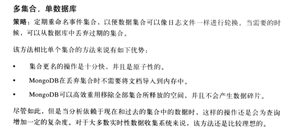
多数据库
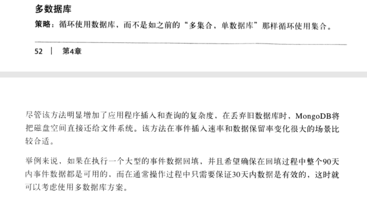
模式设计
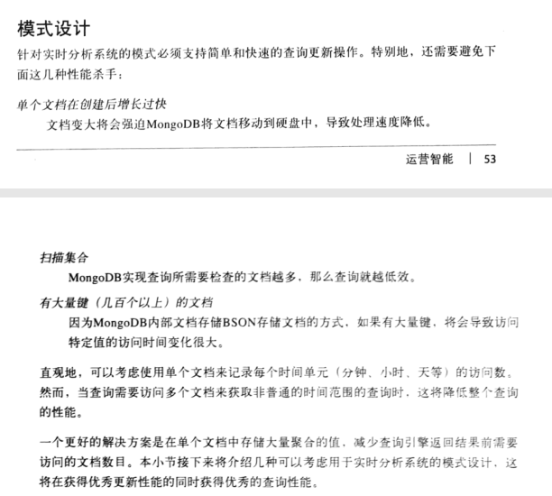